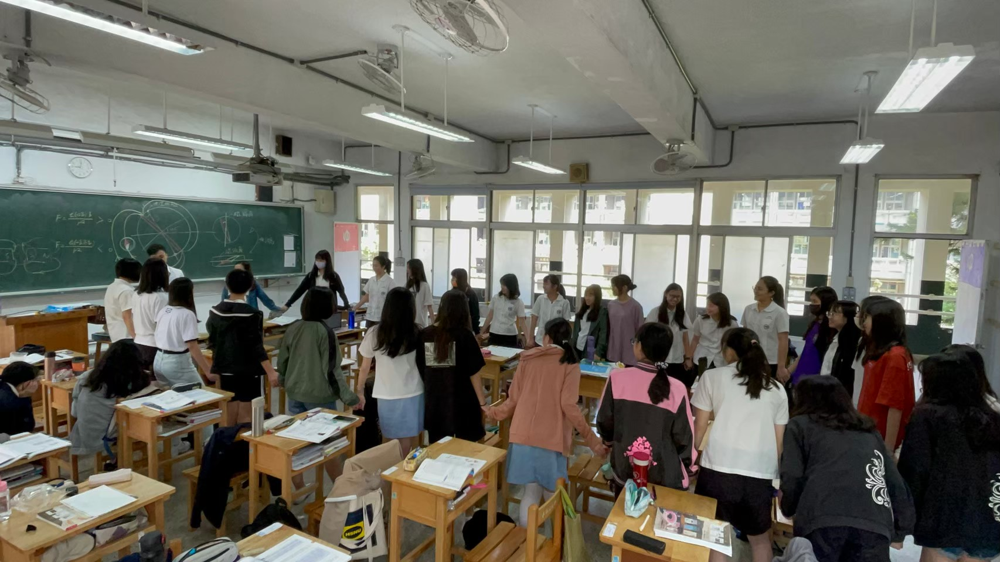

李宜閎
李宜閎
經歷
過去經歷總覽
-
2024/8 – Present
新北市立中和高級中學 物理科 代理教師
-
2023/08 - 2024/01
新北市立中和高級中學 物理科 實習教師
-
2021/08 – 2023/07
國立臺灣大學光電工程學研究所 碩士班
-
2017/08 - 2021/07
國立臺灣師範大學物理學系 學士班
技能
資訊能力
程式語言
影音剪輯
生活科技
教學經歷
教學助理
課輔活動
教育實習
生活科技
-
教學助理
就讀研究所期間：擔任光學傳播散射模擬與數值方法課程之教學助理，課堂學生組成有光電所及電機系大學部的學生為主 授課內容為使用程式語言模擬馬克士威方程探討光學或電磁學議題，課堂中偶有外籍學生參與，因此必須有簡易的英語溝通能力。
-
課輔活動
因大學期間受領師資培育獎學金，有機會至臺北市立雙園國中進行每周二次的課後輔導活動，學生組成為國二或國三，進行方式多為一對一問答，協助學生釐清理化及數學上的課業問題。

-
教學實習 @ 國立臺灣師範大學附屬中學
於大四下學期進行教學實習，對高一班級進行一次段考之授課(總節數約12堂)，課程內容穿插靜電學等演示實驗，授課方法除傳統板書教學外，嘗試簡報數位授課或kahoot問答等數位工具。


實習歷程
-
教學
素養導向：融入生活常見的現象、物品演示概念
數位輔助：平板教學輔助概念解釋、即時量測數據
教材製作：利用簡易可得的材料製作器材
拔尖扶弱教學計畫：利用每周放學，加強高意願低成就之學生學習知能。
在高三班級進行物理演示實景 
為高二升高三的同學進行物理扶弱計畫 
-
行政
協助外籍生相關活動、華語文補救教學、學測破百誓師大會、學術職涯探索營隊、學科能力競賽、校慶運動會。
於教務處設備組實習，熟悉教室與教學設備使用及管理
協助進行活動紀錄與攝錄影 
與其他實習教師一同策畫學測破百誓師活動 透過桌遊讓外籍生練習中文 協助學校照料學科能力競賽選手出校比賽 
剪輯學測誓師活動的開幕影片
-
課程設計
探究式課程：熱容、熱輻射、起電棒的機構設計...
素養導向課程：為何有些車子有後雨刷？
跨領域課程：透過深度學習預測物理模型...
主題式課程：TSMC如何在半導體業佔有一席之地?
-
研習活動經歷
專題探究式課程設計
生成式AI於教學現場的應用：文本編修、整理
運算思維教學工作坊
輔導知能：霸凌事件、學生自（殺）傷、特殊教育
法律知能：師生管教、著作權及新興法律議題
複合式防災研習
性別平等
成己，成物。
不是有希望才堅持，而是堅持才有希望。
發表與活動經歷

Simulation of a photonic crystal waveguide using the FDTD method.
(2023臺灣物理年會)
使用FDTD(時域有限差分法)模擬電磁學問題，主在研究線缺陷光子晶體的波導特性。


師資生自主學習社群
期末競賽第五名入選
(2021)
當時由三位師資生共同組成類似讀書會之學習社群，取名為｢情意中有科學，科學中見真意」，目標為透過科學演示讓一般大眾也能理解科學。最終於期末成果競賽得第五名。
通過教學實務能力檢測-科技融入教案
(2021)
將手機量測運用於物理探究課堂之中，教案中規劃使用phyphox軟體進行磁場之量測，

入選全國科學探究競賽
這樣教我就懂
(2021)
以萬有引力單元及引潮力為學習內容，撰寫1張A4的文案讓讀者理解何謂引潮力以及引潮力對生活帶來的影響。並說明Comet Shoemaker–Levy 9 知名例子。
Contact
Tel. 0972-797-207
Email: howard22600673
LineID: Howard0702(點我加入)